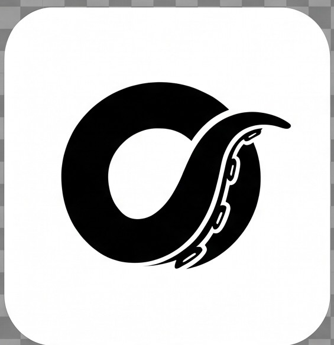

OCTOR
⚙
Pronto
Entre no OCTOR
Usuário
Senha
Entrar
Entrar pelo navegador / Google
Iniciar captura
Opções de captura
Título do guia
Gravar com microfone
0
Passos capturados
Pausar
Finalizar
Encerrar tutorial
Narração do passo
Tentar carregar novamente
Finalizar sem narração
Seus documentos
☷
Abra seus guias ou crie um manual a partir de uma URL.
Abrir biblioteca
Manual por URL
Manual automático
Continuar coleta
Interromper coleta